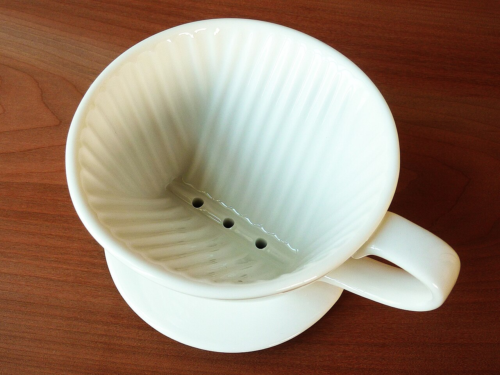

喫茶ドム
昭和の良き日の純喫茶を目指して。ゆっくり流れる一杯の時間を、出水の本町で。

昭和の良き日の純喫茶を目指して。ゆっくり流れる一杯の時間を、出水の本町で。
Instagramのプロフィールには「目指すは『昭和の良き日の純喫茶』」と綴られています。

店名の意味や開業の経緯は確認できていないため、ここでは触れていません。
メニューの内容・価格は準備中です。以下の写真は純喫茶の雰囲気をイメージした素材です。



写真はフリー素材のイメージであり、店舗の実際の様子・メニューではありません。
以下は制作側が作成した創作の例で、実在のお客さまの声ではありません。
昔ながらの喫茶店の落ち着いた空気の中で、ゆっくり本を読んで過ごしたいです。
午後のひと休みに、あたたかいコーヒーを一杯いただきに寄れたら嬉しいです。
Instagramで見かけた企画も楽しそうで、友人と一緒に訪れてみたいです。
掲載写真はすべてフリー素材（イメージ）で、店舗の実際の様子ではありません。